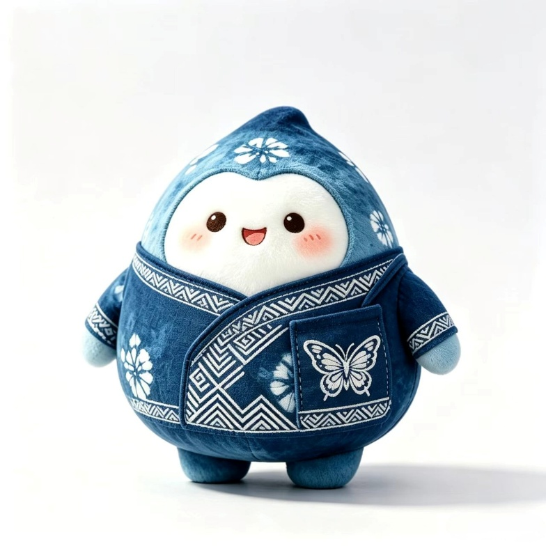
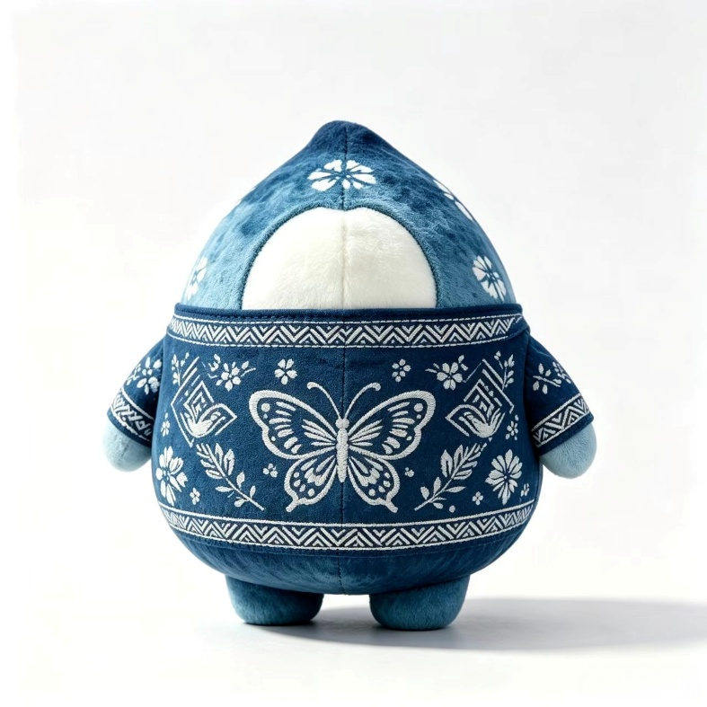

蜡染历史来源：
蜡染古称蜡缬，是中国古代三大防染印花技艺（蜡缬、绞缬、夹缬）之一，属于物理防染工艺体系。其技艺雏形可追溯至秦汉时期，1959 年新疆民丰尼雅遗址东汉墓出土的蓝白蜡染棉布，是国内迄今发现较早的蜡染实物遗存。至唐代，蜡染工艺在中原地区达到鼎盛，广泛应用于服饰、屏风、帐幔等场景；两宋之后，中原染缬工艺逐步转向雕版印花，蜡染技艺在西南少数民族地区得以完整延续，形成“中原失传而边地存”的传承格局。
贵州丹寨是苗族蜡染的核心传承区，境内尤以排倒莫一带的白领苗蜡染最具代表性。2006 年，丹寨苗族蜡染技艺列入第一批国家级非物质文化遗产名录（项目编号：Ⅷ-25）。丹寨蜡染保留了完整的手工技艺链条与原生纹样体系，苗族群体以口传心授的方式代代相传，纹样承载族群历史、图腾信仰与自然认知，被称为“写在布上的苗族史诗”。相较于其他地区蜡染，丹寨蜡染以徒手绘蜡、冰纹自然、纹样古朴为核心特征，是中国古法蜡染活态传承的典型样本。
完整古法工艺流程分为七大核心工序